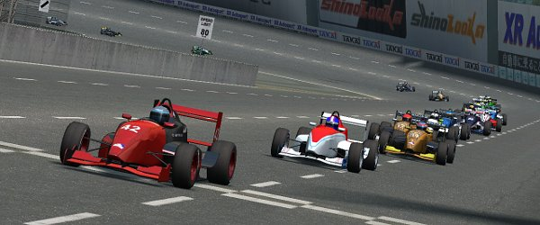
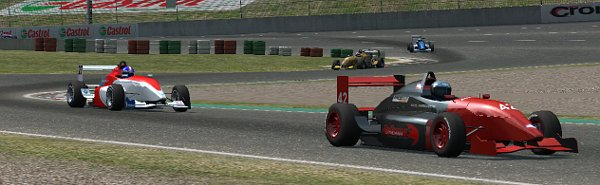
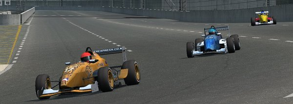
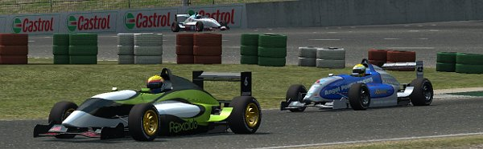
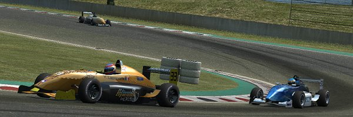
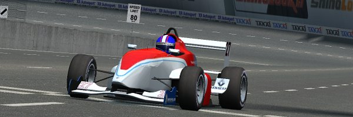

|
End of January 2010 FOX series made it's 2nd visit to Kyoto circuit, this time racing the National layout, which
basically is the tri-oval + it's infield, and makes for having to decide if to go for topspeed or
rather downforce to get better grip in the infield. It turned out that drivers were using the full spectrum
of options, with more or less good result.
Fastest in Qualifying once more was Qscarhardwick, Alain Lang got 2nd position on the grid. Y. Laprevotte
finished Qualifying as 3rd, his team mate Chebbi 4th. Foxclub's Adin lined up 5th with series standings'
leader MaukaZ next to him and Speedsims' DaveO behind on 7th position. Flame and Adin's mate Fordern lined up
8th and 9th. LLM's Bmxtwins got a great 10th position. Some drivers that usually would have been expected to
line up top ten like T.Daams and Masato this time had to start from 2nd half of the grid

Because of Kyoto National track characteristics and the extremely dangerous approach to first turn
after start, first lap was run as pace lap. Though this was put in to avoid potential major first
turn wreckage, some drivers nonetheless managed to get into an incident as soon as infield was entered
at full race speed for first time. Chebbi and Adin got turned around and into the sand, which caused them
to drop from front of the field to the very back. All others rushed up 2 positions
Rest of lap 2 was going on without further problems, even though everybody was running
in thick traffic. Oscarhardwick was closely chased by Alain Lang, while both
of them were already some meters ahead on Y.Laprevotte, who was pursued by MaukaZ. Soon some 2 secs
behind a group of 4 cars were battling for Fordern's 5th position. DaveO was attacking the #6 all of 2nd and 3rd lap, but
pushed too hard in T8, slipped off and instantly dropped back several positions. Now Flame and Fast Jarda
were taking over attacking Fordern, while next group, consisting of Bmxtwins, Masato, K.Sheppard, Zombie and
T. Daams were passing the still recovering DaveO. Who came back to the track just the same time when his team
mate Cholerix was passing by too... both cars collided in T9.

While up front in lap 4 MaukaZ slowly crept closer on Y. Laprevotte, Fordern had to stand continuous attacks
from Flame just like Bmxtwins had to fight off K.Sheppard. Chebbi had managed to work off some of his early offtrack
experience from 2nd lap already and was starting to show up in T.Daams' rear view mirror. DaveO meanwhile
was able to even increase his amount of problems when he slipped in T10 right into Adin's race line. Adin's
race was ended when his car flipped after crashing into the stranded #83. DaveO had to limp into pits for repair
and dropped down to last position.
Masato and Zombie had entered pits for regular service end of 2nd and 3rd lap already, following their usual
pit schedule
On the next laps it became obvious there was 3 races in one. While the top 4 drivers were still close, fighting
in duos, behind MaukaZ there was a rather big, still increasing 5 sec gap already. Flame had just managed
pass Fordern at the most popular place to do so, on approaching T1, and was leading a group of 3 cars now.
K.Sheppard had been as successful at passing Bmxtwins, both being 3 secs ahead on Chebbi and T.Daams. Chebbi
had just overtaken T.Daams, but slipped in T9 in a perfect 360° spin and was back to fight for 10th position.
Behind Chebbi was a really big gap of about 15 secs already, caused by the fact that everybody behind had either
been in an incident or in pits already

While Oscarhardwick was now able to very slowly build up a small gap on Alain Lang, MaukaZ finally made good use of his
superior topspeed to get to a podium position after having passed Y.Laprevotte. He couldn't shake him off though,
so they both continued trying to stay withing reach of top 2 drivers. Flame on 5th position was soon without someone
to check for, while some secs off Fordern had a hard time making Fast Jarda stay behind. This fight went on for quite
while. 8th position was now... Chebbi ! His second approach for getting T.Daams' position had been
more successful than first, and he had got Bmxtwins on top, when that one had dropped back after some minor slips
in lap 6. K.Sheppard even had had a less minor slip in lap 7 in turn 3 and had dropped down to 11th position.
Cholerix was running on a lonely 12th position with nobody in front or back within 10 secs reach at that time, when
right behind C.Sheppard another group was building up. Burnout, Masato and Mustangman were closing in to the #16 car,
while Turtlewise was next to drop off the race when he slipped in T10 and flipped his car. Masato was fastest in his
group of cars and soon running on 12th position. Mustangman had just passed Burnout when
both of them collided in T 4 in lap 9, which made the #69 end up sticking in the sand and immediatly dissolve their group.

About the same time most drivers were heading for pitlane for regular service stops and ended the fights they had been in
that way. Only to start new ones as soon as they exited pits. MaukaZ came out of pits just ahead of Flame - who had missed
to change his tires - and had to fight to keep 5th position instead of aiming for 3rd. T.Daams exited just behind Masato and
was now looking towards 9th position. Fordern had finally gotten rid of Fast Jarda, only to slip in T3 in lap 10. and drop
back to 5th place - right in front of Chebbi until he went for pits too.
When Y.Laprevotte exited pits on the same lap, he was safely
ahead of MaukaZ and Flame and looking towards a podium finish. Just like Oscarhardwick expected to do when he temporarily
dropped down to 3rd position after his pitstop - Alain Lang and Chebbi obviously were both running a
last-minute-pistop-strategy. Oscarhardwick's race had been a perfect one until then... until he got into an incident at
lapping the #21 at lap 14, which made him spin off and lose about 12 secs on Alain Lang. The #13's driver just managed
to get back to the track right in front of Y.Laprevotte and MaukaZ.

In laps 13 and 14, MaukaZ outran Flame and closed
in to Y.Laprevotte, though not sufficiently to attack.
But at least podium was within reach again and still 2 laps to go. MaukaZ didn't waste any time and started attacking
at first opportunity - last 2 laps promised to become thrilling for the #33's driver, Y.Laprevotte. Some way off, Fordern
was under permanent attack from Fast Jarda. The Foxclub driver had managed to switch positions again in pits and
continue their battle in the original order right after pitstop. That fight only ended on the finishing line
and included several, though only brief, switch of positions on the remaining laps
Race leader Alain Lang was almost last to enter pits at the end of lap 15. He came out still leading the race, about 10 secs
ahead of Oscarhardwick, who was fiercely fighting to close in and work off his incident frustration, but running out of time.
Chebbi was last one in pits and
failed utterly. He came in too fast and got a penalty - which he performed in next lap... when he again came into pits too
fast and got another penalty. Which made him drop off frustrated.
Having launched attacks in rightout *every* turn in laps 15 and 16, MaukaZ continued on same way into lap 17. He
was almost in front of the #33 several times, but Y.Laprevotte always got the better end of it. Which only made
MaukaZ try to put more force into his attacks. In last lap he became too optimistic about his car's relationship
between griplevel and acceleration ability and screwed up turn 3. This not only made Y.Laprevotte relax instantly,
but Flame inherit 4th position too.

Alain Lang was first to cross the finishing line after having run a flawless race. Oscarhardwick finished 2nd, Y.Laprevotte
3rd. Flame crossed the line 4th, MaukaZ 5th. Fordern had been able to stand all of Fast Jarda's attacks and made
6th place. T.Daams and Zombie had fought down Masato on last laps and finished 8th and 9th, Masato 10th.
For full race result, check
here
|